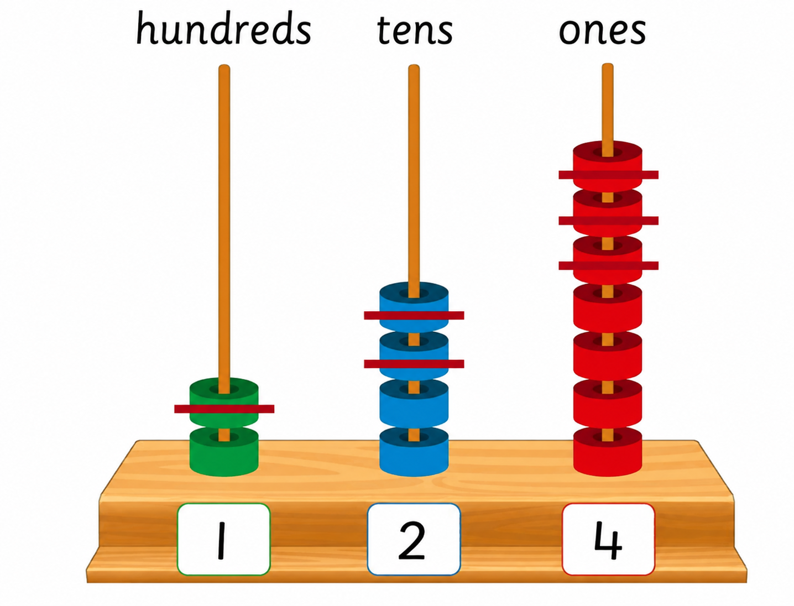

Or
247 minus 123
247 − 123 = 124
Exercise 1
Write the answer in each question.
1. 299 − 133 = [[blank:item-1]]
2. 795 − 275 = [[blank:item-2]]
3. 444 − 200 = [[blank:item-3]]
4. 568 − 346 = [[blank:item-4]]
5. 306 − 204 = [[blank:item-5]]
6. 597 − 50 = [[blank:item-6]]
7. 980 − 440 = [[blank:item-7]]
8. 600 − 300 = [[blank:item-8]]
9. 649 − 48 = [[blank:item-9]]
10. 937 − 415 = [[blank:item-10]]
11. 935 − 213 = [[blank:item-11]]
12. 528 − 417 = [[blank:item-12]]
13. 438 − 216 = [[blank:item-13]]
14. 287 − 240 = [[blank:item-14]]
15. 386 − 215 = [[blank:item-15]]
16. 756 − 524 = [[blank:item-16]]
17. 368 − 118 = [[blank:item-17]]
18. 999 − 439 = [[blank:item-18]]